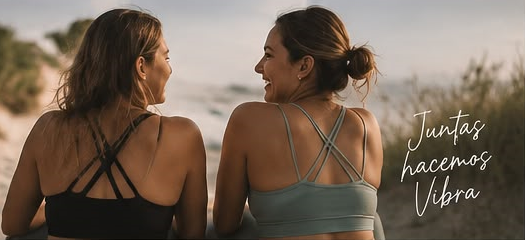

Acerca de VibraMas
Un espacio nacido entre los médanos y el mar de Necochea para desarmar la prisa, reconciliarnos con el cuerpo y redescubrir la alegría del movimiento auténtico.
El Nacimiento de la Idea
Vibra nació de una pregunta recurrente entre dos amigas y colegas que caminaban por las playas de Necochea: ¿por qué tantas personas viven su cuerpo como una carga o una exigencia estética, en lugar de como su refugio de mayor vitalidad?
Veíamos gimnasios saturados de música estruendosa, métricas de rendimiento agotadoras y clases donde la postura perfecta valía más que el respeto a la propia anatomía. Sentimos el llamado visceral de fundar una alternativa: un lugar donde respirar hondo, bajar las defensas y movernos con placer, sin pretender encajar en moldes ajenos.
«El cuerpo no es un objeto a corregir; es la vida misma manifestándose a cada segundo.»

Consolidación de la Marca
Al unir la tradición milenaria del Yoga (guiada por Joana) con la precisión anatómica y biomecánica del método Pilates (guiada por Yoshi), dimos forma a una metodología complementaria. VIBRA no es solo un nombre sonoro: representa la frecuencia de la respiración que resuena en cada célula.
Consolidamos un lenguaje visual cálido, tonos arena, verdes salvia y terracotas que evocan el suelo natural y la calma marina. Diseñamos cada detalle con la premisa de la regla de impacto sereno: que al entrar a nuestra sala o abrir nuestra web sientas una inmediata exhalación de alivio.

Desarrollo y Actualidad
Hoy en día, nuestro estudio central en Calle 62 alberga grupos reducidos de no más de 12 personas por turno. Esto garantiza que cada docente pueda corregir la alineación de tus hombros, ajustar tus apoyos y adaptar las asanas a cualquier molestia articular.
Incorporamos props especializados (bolsters de algodón natural, bloques de corcho, bandas de resistencia) y desarrollamos cápsulas de movilidad para deportistas de la costa (runners, surfistas, pádel).
Integración Digital
Para responder a quienes viajan, trabajan a contraturno o viven fuera de Necochea, creamos VibraMas Online. Clases grabadas en alta definición y transmisiones en vivo que replican la calidez y el ritmo sereno de nuestra sala física.
Además, a través de nuestro canal de YouTube y plataforma web, las profesoras comparten contenido semanal accesible para democratizar el bienestar.
Ver Membresía Online en Tienda ↗Una Práctica Abierta, Inclusiva y Positiva
En VibraMas no importa tu edad, tu peso, tu flexibilidad ni si alguna vez te paraste sobre un mat. Lo único que importa es tu deseo de regalarte una hora de escucha honesta y cuidado personal. Somos una comunidad que celebra cada pequeño avance con una sonrisa.